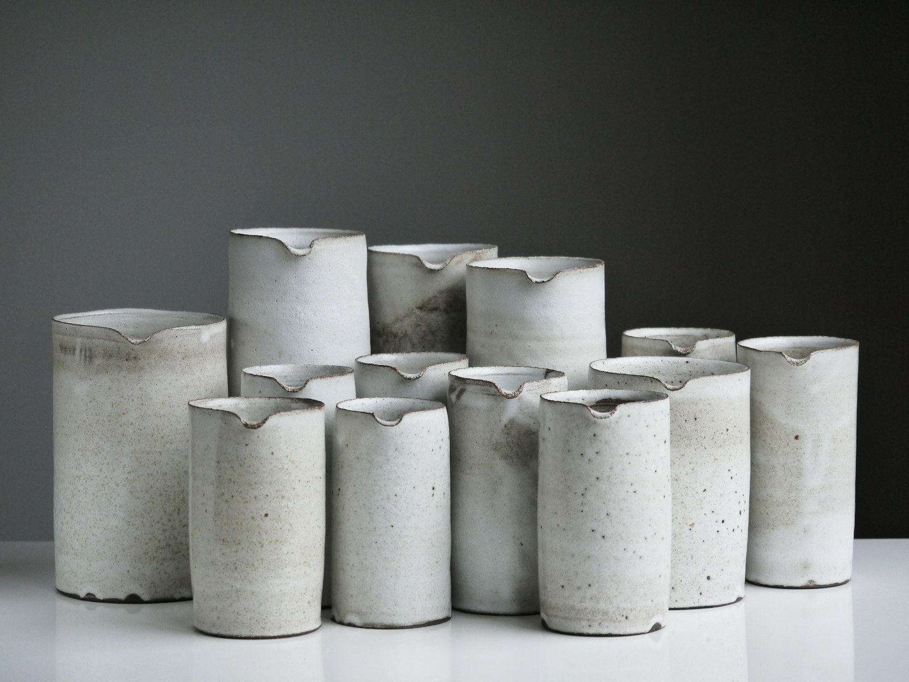

01 / Clay
A grounded beginning.
We imagine working with stoneware for its substance and quiet strength. The starting point is always how the material feels, and what it asks of a form.

Good things take shape slowly.
Explore handbuilding →
Our studio
Clay & Still is an imagined independent ceramics studio built around a simple belief: the objects we live with can invite us to slow down.

The studio philosophy
We imagine pieces that become part of ordinary rituals: moving a branch into the light, setting a table for one, clearing a favourite corner at the end of the day.
Our forms begin with proportion and touch. A rim should feel considered. A base should sit comfortably. The small variations of making by hand are part of the object, not something to erase.
Small collections leave room to look closely, adjust a curve, and learn from the last firing. Slow production is a practical choice as much as a creative one.
The things we come back to
01 / Clay
We imagine working with stoneware for its substance and quiet strength. The starting point is always how the material feels, and what it asks of a form.
02 / Glaze
A glaze can pool, break, soften, and surprise. Test tiles and patient notes help us understand those changes without sanding away their character.
03 / Pace
Drying and firing cannot be hurried without consequence. Making in small groups allows time for each stage and a closer look at every result.
An open table
Workshops make room for curiosity, not perfect results. We imagine a calm table, shared tools, and enough time to ask the small questions. You do not need to call yourself creative to begin.
Find your way into clay ↗